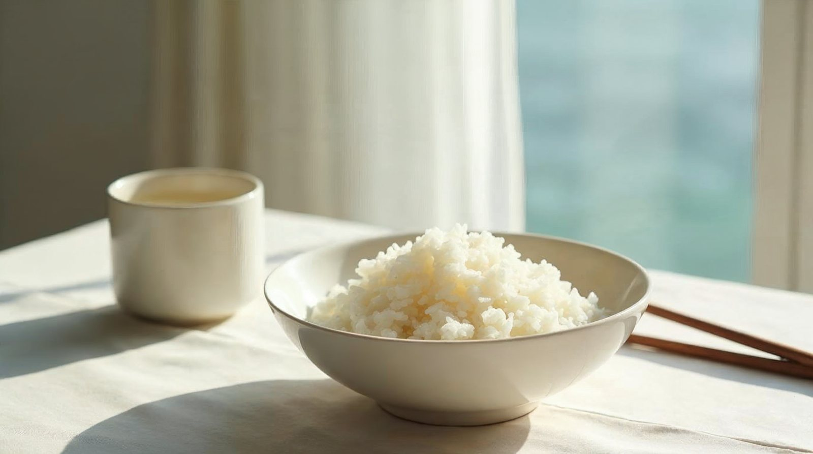
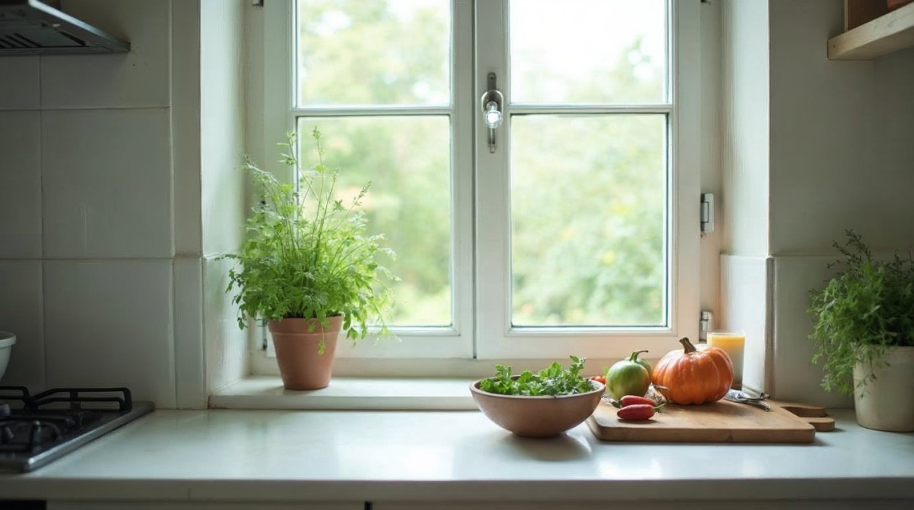
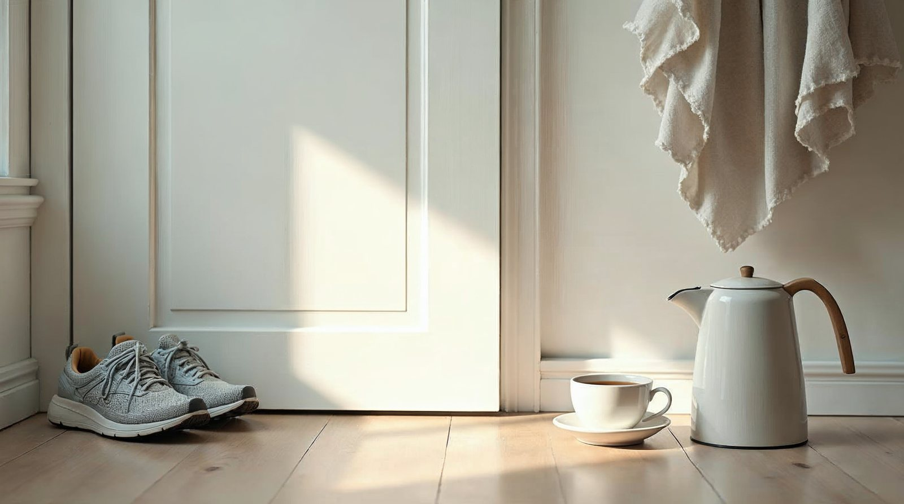
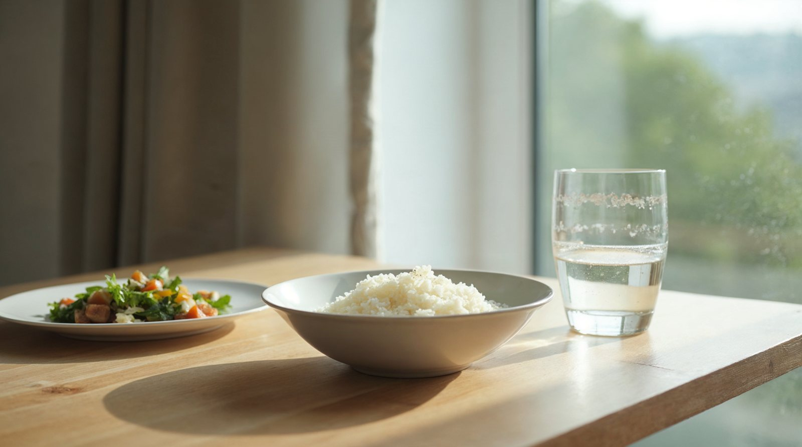
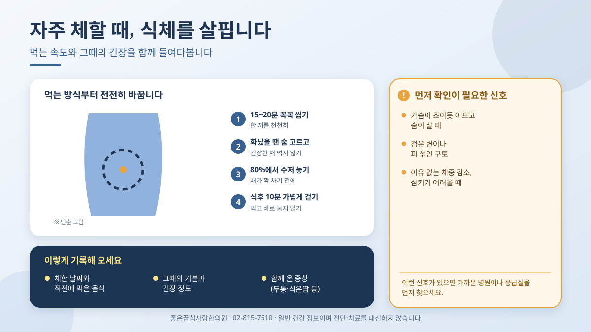

이종호 한의사 감수좋은꿈참사랑한의원 대표원장 (한의사 면허번호 19769)발행 2026-11-26 · 수정 2026-11-26
이 글의 차례
점심을 급하게 먹고 회의에 들어갔는데, 오후 내내 명치가 돌덩이를 얹은 듯 꽉 막혀 있습니다. 트림은 나올 듯 말 듯하고, 머리까지 지끈거리고, 손끝이 차갑습니다. 저녁은 엄두도 나지 않습니다. "또 체했나 봐." 이번 달에만 벌써 몇 번째인지 모르겠습니다.
'체했다'는 말은 우리가 아주 익숙하게 쓰지만, 사실 의학 교과서에 나오는 병 이름은 아닙니다. 명치가 막힌 듯 답답하고, 더부룩하고, 메스껍고, 트림이 잦고, 때로 두통이나 식은땀, 손발 냉기까지 함께 오는 느낌을 넓게 부르는 생활의 말입니다. 그래서 저는 이 말을 들으면 먼저 '어떤 느낌을 체했다고 하시는지'부터 여쭙니다.
자주 체한다는 분들 가운데 많은 경우는 위가 음식을 받아들이고 아래로 내려보내는 움직임이 둔해지거나 예민해진 상태와 관련이 있습니다. 내시경에서 뚜렷한 이상이 없는데 이런 불편이 이어지면 기능성 소화불량이라는 이름으로 부르기도 합니다.
진료실에서 이런 말씀을 자주 듣습니다. "남들은 아무렇지 않게 먹는 걸 저만 못 먹어요." 회식 자리에서 젓가락을 일찍 내려놓고, 약속을 잡을 때마다 메뉴부터 걱정하는 하루가 얼마나 고단하셨을까 싶습니다. 먹는 일이 즐거움이 아니라 조심스러운 일이 되어 버린 그 마음을 먼저 알아 드리고 싶습니다.
왜 자꾸 체할까요
위는 음식이 들어오면 위쪽이 풍선처럼 부드럽게 늘어나 음식을 받아 두고, 아래쪽에서 조금씩 섞고 갈아 장으로 내려보냅니다. 이 늘어나는 일과 내려보내는 일이 박자를 맞춰야 속이 편합니다. 그런데 긴장하거나, 너무 빨리 먹거나, 몸이 지쳐 있으면 위가 잘 늘어나지 못하고 내려보내는 속도도 느려집니다.
그러면 조금만 먹어도 꽉 찬 느낌이 들고, 음식이 오래 머무는 듯 묵직해집니다. 위가 자극을 예민하게 느끼는 분이라면 같은 양이라도 더 크게 불편을 느낍니다. 여기에 공기를 많이 삼키면 트림과 팽만이 더해지지요.
긴장과 위는 생각보다 가깝습니다. 화가 난 채로, 혹은 걱정을 안고 밥을 먹으면 자율신경이 위를 움츠러들게 만들어 소화가 더뎌지기 쉽습니다. 시험 전날, 중요한 발표가 있는 날, 다툼이 있었던 저녁에 유독 체한다는 분이 많은 까닭입니다.
체하면 머리가 아프고 손발이 차가워지며 식은땀이 난다는 분도 많습니다. 위가 탈이 나면 몸 전체의 긴장이 함께 올라가고, 혈액이 배 쪽으로 몰리며 손발 끝이 차게 느껴질 수 있습니다. 한의학에서는 이런 모습을 기운이 막혀 위아래로 잘 통하지 않는 상태로 보아 왔습니다.
식체와 담적, 이렇게 이해하시면 됩니다
식체(食滯)
식체는 말 그대로 먹은 것이 머물러 내려가지 않는다는 뜻의 한의학 표현입니다. 과식이나 급한 식사 뒤 명치가 막히고 신물이나 썩은 냄새 나는 트림이 올라오며, 배가 빵빵하고 입맛이 떨어지는 모습을 가리킵니다. 우리가 흔히 '체했다'고 하는 상태와 가장 가까운 말입니다.
담적(痰積)
담적은 소화되지 못한 것이 오래 쌓여 몸의 흐름을 막는다는 뜻으로 쓰이는 표현입니다. 자주 체하고, 늘 더부룩하고, 몸이 무겁고 머리가 맑지 않은 모습을 설명할 때 쓰이곤 합니다. 다만 이것은 몸의 상태를 묘사하는 전통적인 말이지, 검사로 확인되는 특정한 덩어리나 진단명이 아니라는 점을 꼭 말씀드리고 싶습니다.
저는 진료실에서 이런 말을 겁을 주는 데 쓰지 않습니다. "위에 뭐가 딱딱하게 쌓였다던데요" 하고 걱정하며 오시는 분도 계신데, 그런 말보다 지금 몸이 어떤 박자로 먹고 소화하고 있는지를 같이 들여다보는 편이 훨씬 쓸모가 있습니다.

자주 체함과 비슷해 보이는 불편들
명치가 쓰리고 신물이 목까지 올라오며 누우면 심해진다면 역류성 식도염 쪽에 더 가깝습니다. 빈속에 쓰리고 밤에 깨는 일이 잦다면 궤양 여부를 확인해 볼 만합니다. 기름진 식사 뒤 오른쪽 윗배가 아프고 등까지 뻗친다면 담낭 쪽을 생각해 초음파 확인을 권합니다.
배 전체가 아프고 설사와 변비가 번갈아 오며 변을 보면 가라앉는다면 과민성 장 쪽을 먼저 봅니다. 조금만 먹어도 배부르고, 식후 더부룩함이 몇 달째 이어진다면 기능성 소화불량의 모습과 많이 겹칩니다. 실제로는 이 가운데 두세 가지가 함께 있는 분이 많습니다.
그래서 저는 이름 하나를 붙이는 데 서두르지 않습니다. 언제, 무엇을 먹은 뒤, 어떤 마음으로 먹었을 때 불편한지를 몇 주 기록해 보면 내 몸의 양상이 보이기 시작합니다. 그 양상에 따라 손볼 곳이 달라집니다.
손 따기와 소화제, 어떻게 생각하면 좋을까요
체했을 때 손끝을 따는 분이 많습니다. 오래전부터 집에서 해 오던 방법이라 익숙하시지요. 다만 소독이 제대로 되지 않은 바늘을 쓰면 상처가 덧날 수 있고, 피를 묽게 하는 약을 드시는 분이나 당뇨가 있는 분은 특히 조심하셔야 합니다.
소화제를 자주 찾게 된다면, 약보다 왜 자꾸 체하는지를 먼저 살펴볼 때가 되었다는 뜻일 수 있습니다. 소화제는 그때의 불편을 덜어 주는 데 쓰이지만, 체하는 하루의 습관은 그대로 남아 있기 때문입니다.
체한 날에는 억지로 먹지 말고 한 끼쯤은 속을 비우거나 미음, 죽처럼 부드러운 것을 조금만 드셔 보세요. 따뜻한 물을 조금씩 마시고, 배를 시계 방향으로 천천히 문지르거나, 무리하지 않는 선에서 가볍게 걸으면 속이 편해지는 데 보탬이 될 수 있습니다. 먹고 바로 눕는 것은 피하시길 권합니다.

지친 몸은 위부터 쉬자고 합니다
자주 체한다는 분들께 요즘 잠은 어떠신지 여쭈면, 많은 분이 잠깐 말을 멈추십니다. 잠이 얕거나 짧은 날이 이어지면 위의 움직임도 함께 둔해지기 쉽습니다. 밤새 몸이 회복하지 못한 채 아침을 급히 먹고 나서면, 위는 준비도 되지 않은 채 일을 시작하는 셈입니다.
끼니를 거르는 습관도 위를 헷갈리게 합니다. 배고픔을 오래 참다가 한꺼번에 많이 먹으면, 오래 쉬던 위가 갑자기 큰일을 떠안게 됩니다. 그래서 저는 자주 체하는 분께 양을 줄이기보다 끼니의 간격을 고르게 하는 것부터 권합니다.
나이가 들면 위의 움직임도 젊을 때보다 조금씩 느려집니다. 예전에는 아무렇지 않던 늦은 저녁이나 기름진 안주가 어느 해부터 버거워졌다면, 몸의 박자가 바뀌었다는 신호로 받아들이시면 좋겠습니다. 탓할 일이 아니라 맞춰 갈 일입니다.
예를 들면 이런 경우입니다
실제 어느 분의 사연이 아니라, 진료실에서 자주 보는 모습을 바탕으로 그려 본 장면입니다.
예를 들어 점심시간이 짧아 십 분 만에 밥을 넘기고 바로 자리로 돌아가는 직장인이라면, 메뉴보다 먹는 속도부터 봅니다. 한 숟가락 뜨고 수저를 내려놓는 작은 습관 하나가 생각보다 많은 것을 바꿉니다.
긴장이 많고 생각이 많아 밥 먹는 동안에도 일 걱정을 놓지 못하는 분이라면, 식사 전에 숨을 세 번 길게 내쉬고 시작해 보자고 말씀드립니다. 위는 마음이 놓여야 제 박자를 찾기 때문입니다.
손발이 늘 차고 찬 음료나 날것을 먹으면 유독 체한다는 분이라면, 차가운 것을 줄이고 따뜻한 음식 위주로 바꿔 보는 것부터 정합니다. 이런 분들은 맥을 짚어 보면 손목이 차고 힘이 약한 경우가 많아, 체력과 잠도 함께 살핍니다.
먼저 이렇게 여쭙니다
- '체했다'고 느낄 때 어떤 느낌인가요? 막힘, 더부룩함, 메스꺼움, 트림, 두통 중 무엇이 큰가요?
- 한 달에 몇 번쯤 체하시나요? 특히 잘 체하는 음식이나 상황이 있나요?
- 식사 시간은 얼마나 걸리나요? 긴장하거나 서둘러 먹는 날이 많나요?
- 손발이 차거나, 잠이 얕거나, 대변이 불규칙하지는 않나요?
- 최근 위내시경을 받으셨나요? 그 결과는 어땠나요?
- 소화제나 진통제, 다른 약을 자주 드시나요?

일상에서 먼저 해 볼 수 있는 것
자주 체하는 분께 저는 '무엇을 먹느냐'보다 '어떻게 먹느냐'를 먼저 바꿔 보시라고 권합니다. 같은 음식이라도 먹는 방식에 따라 위가 받는 부담이 크게 달라집니다.
- 한 끼를 15~20분에 걸쳐 천천히 꼭꼭 씹어 먹기
- 화가 나거나 크게 긴장한 상태에서는 잠시 숨을 고른 뒤 먹기
- 배가 80% 정도 찼을 때 수저 내려놓기
- 찬 음료와 날것은 줄이고, 따뜻한 국물보다 따뜻한 물 한 모금으로 시작하기
- 먹고 바로 눕거나 엎드리지 않고, 식후 10분쯤 가볍게 걷기
- 끼니를 거르다 몰아 먹지 않기
국에 밥을 말아 후루룩 넘기거나, 물이나 음료를 들이켜며 음식을 씻어 내리듯 먹는 습관도 살펴보세요. 씹는 시간이 줄면 위가 해야 할 일이 그만큼 늘어납니다.
체한 날을 달력에 표시해 두면 생각보다 많은 것이 보입니다. 월요일마다, 회식 다음 날마다, 생리 전마다처럼 일정한 흐름이 보이기도 합니다. 그 흐름이 보이면 미리 준비할 수 있습니다. 회식이 잡힌 날에는 점심을 가볍게, 저녁 자리에서는 처음 30분 동안 천천히 먹는 것처럼 작은 계획 하나만 세워 두어도 다음 날 속이 한결 덜 무겁다는 분이 많습니다.
한의원에서 함께 살필 수 있는 경우
- 내시경에서 큰 이상이 없는데도 한 달에 여러 번 체하는 경우
- 체할 때마다 두통, 식은땀, 손발 냉기가 함께 오는 경우
- 긴장하거나 화가 난 날마다 소화가 멈추는 듯한 경우
- 손발이 차고 찬 음식에 유독 약하며 쉽게 지치는 경우
좋은꿈참사랑한의원에 처음 오시면 먼저 아래 '먼저 확인이 필요한' 신호가 없는지부터 봅니다. 그다음 맥을 짚으며 식사, 잠, 대변, 체온을 여쭙고 배를 눌러 보며 명치와 배의 긴장을 확인합니다. 필요하다고 판단되면 초음파로 윗배를 살펴봅니다.
그 뒤 진찰한 내용을 바탕으로 먹는 습관 하나와 함께 침, 온열 장비를 이용한 관리, 한약 상담 가운데 지금 상태에 맞는 것을 정합니다. 한약을 상의할 때는 드시는 약과 위장 상태를 함께 확인하고 신중하게 정합니다.
다시 오시면 지난번 정한 습관이 실제로 어땠는지, 그사이 체한 날은 며칠이었고 어떤 날이었는지부터 이어서 여쭙습니다.
이렇게 기록해 오시면 상담이 쉬워집니다
- 체한 날짜와 시각, 그 직전에 먹은 음식과 먹는 데 걸린 시간
- 그때의 기분이나 긴장 정도
- 체했을 때 함께 온 증상(두통, 식은땀, 메스꺼움, 손발 냉기)
- 잠든 시각과 깬 시각, 대변 상태
- 최근 내시경 결과와 드시는 약

먹는 일이 다시 편안해지도록
자주 체하다 보면 먹는 일 자체가 두려워집니다. 약속을 피하게 되고, 먹을 수 있는 음식이 점점 줄어들고, 그러다 보면 몸은 더 지치고 위는 더 예민해집니다. 이 고리 안에서 얼마나 조심스럽게 지내 오셨을지 생각하면 마음이 쓰입니다.
천천히, 따뜻하게, 마음을 놓고 먹는 연습부터 같이 해 보겠습니다. 먹는 일이 다시 하루의 작은 즐거움이 되는 것, 제가 소화 상담에서 가장 바라는 모습입니다. 다음에 오시면 지난 2주 동안 체한 날이 어떤 날이었는지부터 여쭙겠습니다.
이런 증상은 먼저 확인이 필요합니다
- 체한 것 같은데 가슴이 조이듯 아프고 숨이 차거나 식은땀이 나는 경우
- 검은 변이나 피 섞인 구토, 이유 없는 체중 감소, 삼키기 어려움이 있는 경우
이런 신호가 있으면 한의원보다 가까운 병원이나 응급실을 먼저 찾으세요.
함께 읽으면 좋은 글
- 식사 뒤에 속이 더부룩한 것은 무엇 때문이고, 속쓰림과는 어떻게 다른가요?
- 조금만 먹어도 금방 배가 부를 때는 무엇을 살펴보나요?
- 소화가 오래 불편할 때 한의원에서는 무엇을 먼저 묻나요?
- 속쓰림인지 더부룩함인지 헷갈릴 때는 어떤 말로 설명하면 좋을까요?
- 찬 음식이나 찬 음료를 먹으면 배가 아플 때는 어떻게 하나요?

여쭙는 것
- '체했다'고 느낄 때 어떤 느낌인가요? 막힘, 더부룩함, 메스꺼움, 트림, 두통 중…
- 한 달에 몇 번쯤 체하시나요? 특히 잘 체하는 음식이나 상황이 있나요?
- 식사 시간은 얼마나 걸리나요? 긴장하거나 서둘러 먹는 날이 많나요?
생활에서 해 볼 것
- 한 끼를 15~20분에 걸쳐 천천히 꼭꼭 씹어 먹기
- 화가 나거나 크게 긴장한 상태에서는 잠시 숨을 고른 뒤 먹기
- 배가 80% 정도 찼을 때 수저 내려놓기
한의원에서 함께 살필 것
- 내시경에서 큰 이상이 없는데도 한 달에 여러 번 체하는 경우
- 체할 때마다 두통, 식은땀, 손발 냉기가 함께 오는 경우
- 긴장하거나 화가 난 날마다 소화가 멈추는 듯한 경우
먼저 확인이 필요한 신호
- 체한 것 같은데 가슴이 조이듯 아프고 숨이 차거나 식은땀이 나는 경우
- 검은 변이나 피 섞인 구토, 이유 없는 체중 감소, 삼키기 어려움이 있는 경우
한눈에 보는 표
| 구분 | 핵심 |
|---|---|
| 여쭙는 것 | '체했다'고 느낄 때 어떤 느낌인가요? 막힘, 더부룩함, 메스꺼움, 트림, 두통 중 무엇이 큰가요? 한 달에 몇 번쯤 체하시나요? 특히 잘 체하는 음식이나 상황이 있나요? |
| 생활에서 해 볼 것 | 한 끼를 15~20분에 걸쳐 천천히 꼭꼭 씹어 먹기 화가 나거나 크게 긴장한 상태에서는 잠시 숨을 고른 뒤 먹기 |
| 한의원에서 함께 살필 것 | 내시경에서 큰 이상이 없는데도 한 달에 여러 번 체하는 경우 체할 때마다 두통, 식은땀, 손발 냉기가 함께 오는 경우 |
| 먼저 확인이 필요한 신호 | 체한 것 같은데 가슴이 조이듯 아프고 숨이 차거나 식은땀이 나는 경우 검은 변이나 피 섞인 구토, 이유 없는 체중 감소, 삼키기 어려움이 있는 경우 |
자주 묻는 질문
'체했다'는 것은 병명인가요?
병명이라기보다 명치가 막히고 더부룩하며 메스꺼운 느낌을 넓게 부르는 생활의 말입니다. 그 느낌이 어떤 모양인지, 언제 오는지를 나눠 보면 살필 방향이 정해집니다.
담적이 있다는 말을 들었는데 위에 무언가 쌓인 건가요?
담적은 소화되지 못한 것이 오래 쌓여 흐름을 막는다는 뜻의 전통적인 표현으로, 검사로 확인되는 특정한 덩어리를 뜻하지 않습니다. 이름보다 지금 먹고 소화하는 박자가 어떤지를 함께 살펴보시길 권합니다.
체했을 때 손을 따도 되나요?
집에서 흔히 하는 방법이지만 소독이 되지 않은 바늘은 상처가 덧날 수 있습니다. 피를 묽게 하는 약을 드시거나 당뇨가 있는 분은 특히 조심하시고, 자주 체한다면 체하는 습관부터 살펴보시길 권합니다.
소화제를 자주 먹어도 괜찮을까요?
소화제는 그때의 불편을 덜어 주는 데 쓰이지만, 자주 찾게 된다면 왜 자꾸 체하는지를 먼저 살펴볼 때입니다. 드시는 약을 알려 주시면 그에 맞춰 진료 방향을 정합니다.
자주 체하는데 위내시경은 꼭 받아야 하나요?
최근에 받은 적이 없고 불편이 몇 주 넘게 이어진다면 한 번 확인해 두시길 권합니다. 결과가 깨끗하더라도 먹는 속도와 끼니 간격, 잠과 긴장을 함께 살펴보면 체하는 흐름을 줄이는 실마리를 찾을 수 있습니다.
체했을 때는 무엇을 먹으면 좋을까요?
억지로 먹기보다 한 끼쯤 속을 쉬게 하거나 미음, 죽처럼 부드러운 것을 조금씩 드셔 보세요. 따뜻한 물을 조금씩 마시고, 먹고 바로 눕지 않는 것이 좋습니다.
좋은꿈참사랑한의원은 재진 때 지난번 이야기부터 이어서 여쭙니다. 진료시간과 예약은 오시는 길에서 확인하세요.
어디서 상담받을 수 있나요?
좋은꿈참사랑한의원은 서울 동작구 만양로2길 2 신성빌딩 3층·5층(서울 동작구 상도동, 7호선 상도역 3번 출구 근처)에 있습니다. 한의사 3명(이종호 대표원장, 조영기 수석진료원장, 정원영 진료원장)이 진료합니다. 진료시간은 평일 09:30~20:00(점심 13:00~14:00), 토·일·공휴일 09:30~15:00이며, 방문 전 전화로 확인을 권합니다. 예약은 네이버 예약, 카카오톡 상담, 전화 02-815-7510로 받습니다.
이 글은 일반적인 건강 정보이며 개인의 진단이나 치료를 대신하지 않습니다. 증상이 있거나 복용 중인 약이 있다면 진료를 통해 확인하세요. 치료 효과는 개인마다 다를 수 있습니다.
작성 기준: 일반적으로 알려져 있는 건강 정보를 참고해 정리했습니다(대표원장 감수). 증상 기록은 1~2주 동안 하루 1회, 비슷한 시간에 적어 오시면 지난 상태와 비교하기 쉽습니다.